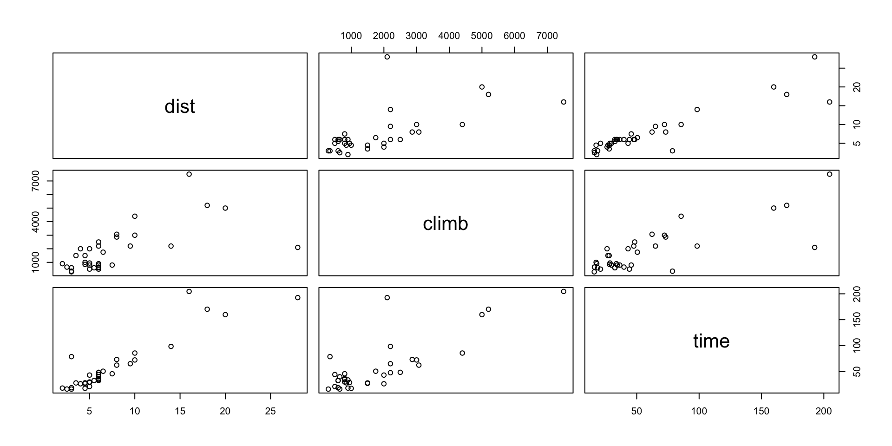
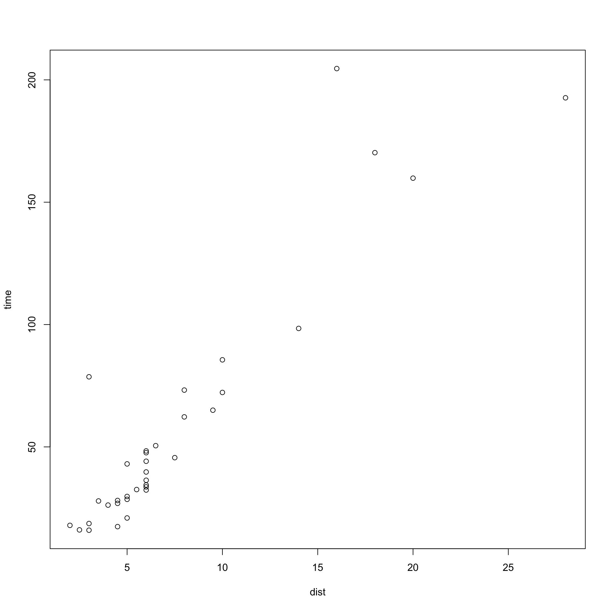
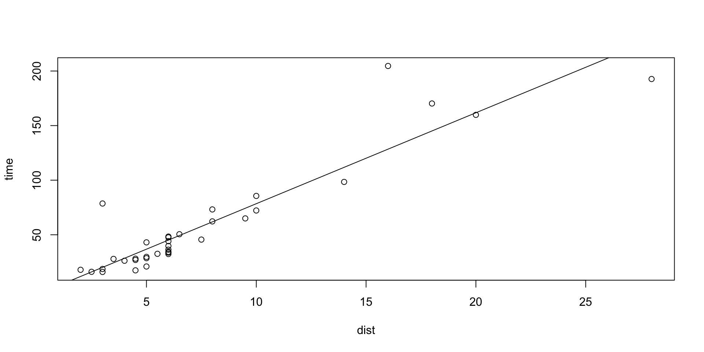
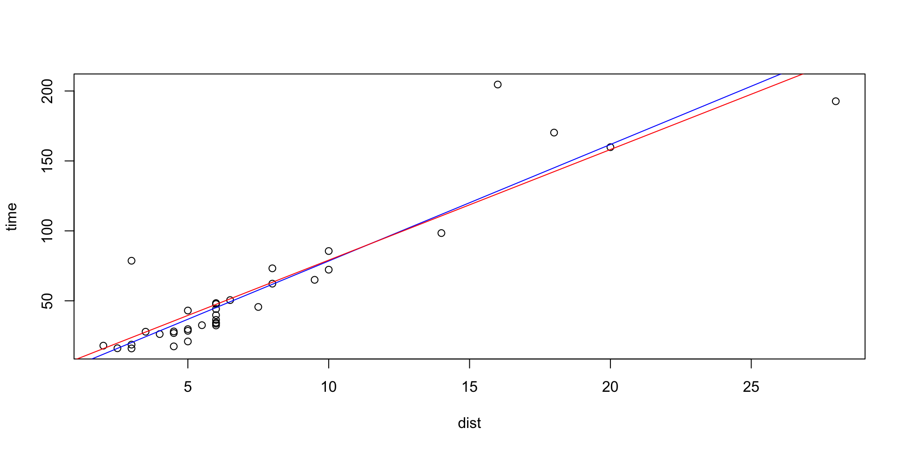
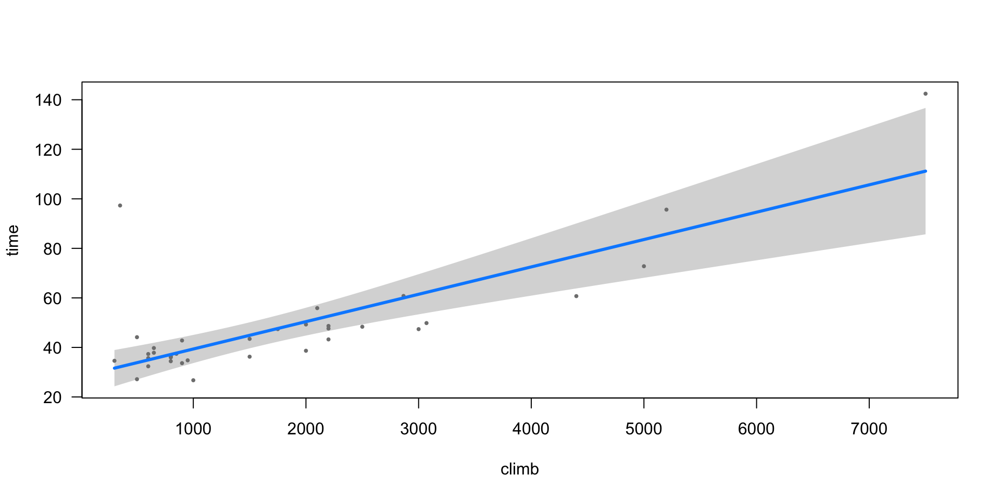
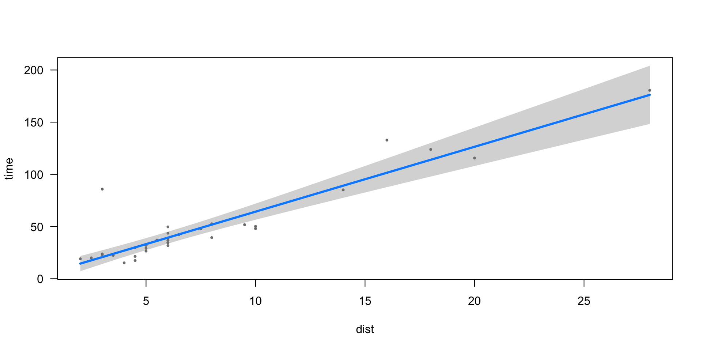

Workshop 1 - statistical regression models
Regression models
Statistical models are used to model outcome \(y\) as a function of inputs \(x\).
- \(y\) is called the response
- \(x\) are the covariates.
We often have several covariates, so \(x\) may be a vector of values.
We’ll focus on linear models here:
- all the key concepts can be illustrated
- model structure
- model fit
- model validation
- implementation in R
- easier to understand than generalised linear models (GLMs)
Example
- \(y=\) winning time in a Scottish hill race
- \(x=(\)distance, climb\()\) - a vector containing the race distance and the vertical height climbed in the race.
Linear models can be used to predict the winning time from the distance and climb variables
The data are in tidy format:
one observation per row, variables in columns.
Enumerate the races using index, \(i\)
\((y_i, x_i)\) are data corresponding to \(i^{th}\) race.
\(y_1=16.083\) and \(x_1=(2.5, 650)\) are the data point corresponding to the Greenmantle race.
| dist | climb | time | |
|---|---|---|---|
| Greenmantle | 2.5 | 650 | 16.083 |
| Carnethy | 6.0 | 2500 | 48.350 |
| Craig Dunain | 6.0 | 900 | 33.650 |
| Ben Rha | 7.5 | 800 | 45.600 |
| Ben Lomond | 8.0 | 3070 | 62.267 |
| Goatfell | 8.0 | 2866 | 73.217 |
Always plot the data!
How can we model the relationship between time (the response, \(y\)), and distance and climb (the covariates, \(x\))?
What model?
Let’s first think about the relationship between time and distance.

Exercise: What model would you use?
The longer the race, the longer the time taken.
Try a linear model of the form \[\operatorname{time} = a+b\times \operatorname{dist}+e\]
\(a\) and \(b\) are free parameters that we need to estimate from data.
\(e\) is an error term, to represent that the data do not lie perfectly on a line.
Ordinary least squares estimation
To fit a linear model, we find the parameters \(a\) and \(b\) that minimize the sum of squared errors
\[\min_{a, b} \sum_{i=1}^n\left(y_i - (a+bx_i)\right)^2 \]
This is ordinary least squares regression.
Fitted model
The fitted model is \[\operatorname{time}= -4.841+8.330\times \operatorname{dist}+e\]
This shows the data and line of best fit.
Modifying the model
\[\operatorname{time}= -4.841+8.330\times \operatorname{dist}+e\]
Should we include an intercept in this model?
- If the race is 0 miles, this model predicts a record time of -4.841 minutes.
By default, R assumes you want an intercept in the model. To remove it, we have to specify no intercept
The fitted model in this case is
\[\operatorname{time}= 7.908\times \operatorname{dist}+e\]
Which model is best?
Including additional covariates
From our visualization, we know that the winning time also depended upon the amount of climbing in the race
Exercise:
- Fit the straight line model that predicts time as a function of climb only.
- Is this model better or worse than the other model?
Call:
lm(formula = time ~ dist, data = hills)
Residuals:
Min 1Q Median 3Q Max
-35.745 -9.037 -4.201 2.849 76.170
Coefficients:
Estimate Std. Error t value Pr(>|t|)
(Intercept) -4.8407 5.7562 -0.841 0.406
dist 8.3305 0.6196 13.446 6.08e-15 ***
---
Signif. codes: 0 '***' 0.001 '**' 0.01 '*' 0.05 '.' 0.1 ' ' 1
Residual standard error: 19.96 on 33 degrees of freedom
Multiple R-squared: 0.8456, Adjusted R-squared: 0.841
F-statistic: 180.8 on 1 and 33 DF, p-value: 6.084e-15
Call:
lm(formula = time ~ climb, data = hills)
Residuals:
Min 1Q Median 3Q Max
-36.616 -18.293 -4.215 5.103 127.706
Coefficients:
Estimate Std. Error t value Pr(>|t|)
(Intercept) 12.69917 7.71050 1.647 0.109
climb 0.02489 0.00319 7.801 5.45e-09 ***
---
Signif. codes: 0 '***' 0.001 '**' 0.01 '*' 0.05 '.' 0.1 ' ' 1
Residual standard error: 30.12 on 33 degrees of freedom
Multiple R-squared: 0.6484, Adjusted R-squared: 0.6378
F-statistic: 60.86 on 1 and 33 DF, p-value: 5.452e-09R-squared (\(R^2\)) measures how well the model explains the data
It can be interpretted as proportion of variance explained by the model
Model 1 has \(R^2=85\%\), model 3 has \(R^2=65\%\).
Caution is needed when interpreting \(R^2\)
- It doesn’t account for complexity
- It records data fit, not predictive skill
Multiple linear regression
Usually we will have more than one covariate.
Exercise: What model could we use to include climb and dist?
Try a model that is linear in both variables
\[\mathtt{time} = a+b\times \mathtt{dist}+c\times \mathtt{climb}+e\]
This has 3 free parameters: \(a, b\) and \(c\).
Exercise: What command would fit this model in R?
Exercise: How well does it fit the data?
Visualizing the model
This plots the model response as a function of climb, keeping distance fixed.
Visualizing the model
Prediction
A new race is proposed, which will be 10 miles long, and have a height gain of 2500 feet. What do we think the winning time will be?
More complex models
We can include more terms in the model. The first thing to try is an interaction term between dist and climb, i.e. \[\mathtt{time} = a+b\times \mathtt{dist}+c\times \mathtt{climb}+d\times\mathtt{dist}\times\mathtt{climb}+e\]
The R model syntax for this is
\[\mathtt{time} \sim \mathtt{dist}*\mathtt{climb}\] Or more explicitly
\[\mathtt{time} \sim \mathtt{dist}+\mathtt{climb}+\mathtt{dist}:\mathtt{climb}\]
More complex models
We can also include higher order powers:
\[\mathtt{time} = a+b\times \mathtt{dist}+c\times \mathtt{climb}+d\times\mathtt{dist}^2+e\]
\[\mathtt{time} \sim \mathtt{dist}+\mathtt{climb}+I(\mathtt{dist}^2)\]
Evaluating model fit
We can test how well a model fits the data, or how well it predicts new data.
We need to select a score, which measures performance, such as
- mean square error
- probability of misclassification (for logistic models)
It is often useful to compare scores to a reference model, such as the null model which predicts the mean of the data:
Evaluating predictive skill
To evaluate predictive skill, we can do the same thing by splitting the data into test and training sets:
library(dplyr)
test.ind <- sample(1:35, 10) # 10 test points
hills.test = hills |> slice(test.ind)
hills.train = hills |> slice(-test.ind)
model3.train <- lm(time~climb+dist, data=hills.train)
model3.pred <- predict(model3.train, newdata=hills.test |> select(climb, dist))
sum((model3.pred-select(hills.test, time))^2)/10[1] 102.0398Exercise: compute the predictive MSE for a different model.
Repeat the process for different random splits into test and training data.
Statistical significance
R also reports the statistical significance of each variable in the model
Call:
lm(formula = time ~ dist * climb, data = hills)
Residuals:
Min 1Q Median 3Q Max
-25.994 -4.968 -2.220 2.381 56.115
Coefficients:
Estimate Std. Error t value Pr(>|t|)
(Intercept) 9.3954374 6.8790233 1.366 0.18183
dist 4.1489201 0.8352489 4.967 2.36e-05 ***
climb -0.0009710 0.0041648 -0.233 0.81718
dist:climb 0.0009831 0.0003070 3.203 0.00314 **
---
Signif. codes: 0 '***' 0.001 '**' 0.01 '*' 0.05 '.' 0.1 ' ' 1
Residual standard error: 12.92 on 31 degrees of freedom
Multiple R-squared: 0.9392, Adjusted R-squared: 0.9333
F-statistic: 159.6 on 3 and 31 DF, p-value: < 2.2e-16The asterisks indicates whether the model including that variable is a significant improvement over the model not containing the variable.
- The more asterisks, the more important the variable
- Interpretation of these terms is tricky
- If a higher order term is needed, the lower order terms should be included.
Factors
Factors are discrete variables, such as an ID, category (e.g ACORN type).
For example, consider the races up hills that contain the word ‘Ben’ in their name. Perhaps these are different to the other races?
We could consider a model of the form
\[\mathtt{time} = \begin{cases} a+b\times\mathtt{dist}+c\times\mathtt{climb}+e\\ (a+d)+b\times\mathtt{dist}+c\times\mathtt{climb}+e \end{cases} \]
\(d\) here represents an additional intercept for the Ben races
We can create a new dataset with an indicator variable, which is TRUE if the race name contains Ben, and FALSE otherwise:
hills.ben <- hills|> mutate(ben=sapply(rownames(hills), function(x) grepl('Ben',x)))
head(hills.ben) dist climb time ben
Greenmantle 2.5 650 16.083 FALSE
Carnethy 6.0 2500 48.350 FALSE
Craig Dunain 6.0 900 33.650 FALSE
Ben Rha 7.5 800 45.600 TRUE
Ben Lomond 8.0 3070 62.267 TRUE
Goatfell 8.0 2866 73.217 FALSEFitting models with factors
To fit this model, we just include the new variable name in our model specification
Call:
lm(formula = time ~ dist + climb + ben, data = hills.ben)
Residuals:
Min 1Q Median 3Q Max
-15.672 -7.262 -1.353 2.311 65.104
Coefficients:
Estimate Std. Error t value Pr(>|t|)
(Intercept) -8.972200 4.373674 -2.051 0.0488 *
dist 6.201331 0.626073 9.905 4.02e-11 ***
climb 0.011184 0.002372 4.715 4.86e-05 ***
benTRUE -0.997188 8.290884 -0.120 0.9050
---
Signif. codes: 0 '***' 0.001 '**' 0.01 '*' 0.05 '.' 0.1 ' ' 1
Residual standard error: 14.91 on 31 degrees of freedom
Multiple R-squared: 0.9191, Adjusted R-squared: 0.9113
F-statistic: 117.4 on 3 and 31 DF, p-value: < 2.2e-16Exercise: Is this new model an improvement?
Saturated model with random effects
We could fit a model with a factor for each race:
\[\mathtt{time}_i = a_i+e \] where \(i\) indicates the race.
hills.saturate <- hills|> mutate(race=rownames(hills))
model7 <- lm(time ~ race-1, data=hills.saturate)
summary(model7)
Call:
lm(formula = time ~ race - 1, data = hills.saturate)
Residuals:
ALL 35 residuals are 0: no residual degrees of freedom!
Coefficients:
Estimate Std. Error t value Pr(>|t|)
raceAcmony 20.95 NaN NaN NaN
raceBen Lomond 62.27 NaN NaN NaN
raceBen Nevis 85.58 NaN NaN NaN
raceBen Rha 45.60 NaN NaN NaN
raceBens of Jura 204.62 NaN NaN NaN
raceBlack Hill 17.42 NaN NaN NaN
raceBurnswark 34.43 NaN NaN NaN
raceCairn Table 44.13 NaN NaN NaN
raceCairngorm 72.25 NaN NaN NaN
raceCairnpapple 36.37 NaN NaN NaN
raceCarnethy 48.35 NaN NaN NaN
raceCockleroi 28.10 NaN NaN NaN
raceCow Hill 17.93 NaN NaN NaN
raceCraig Dunain 33.65 NaN NaN NaN
raceCreag Beag 32.57 NaN NaN NaN
raceCreag Dubh 26.22 NaN NaN NaN
raceCriffel 50.50 NaN NaN NaN
raceDollar 43.05 NaN NaN NaN
raceEildon Two 26.93 NaN NaN NaN
raceGoatfell 73.22 NaN NaN NaN
raceGreenmantle 16.08 NaN NaN NaN
raceHalf Ben Nevis 47.63 NaN NaN NaN
raceKildcon Hill 15.95 NaN NaN NaN
raceKnock Hill 78.65 NaN NaN NaN
raceKnockfarrel 32.38 NaN NaN NaN
raceLairig Ghru 192.67 NaN NaN NaN
raceLargo Law 28.57 NaN NaN NaN
raceLomonds 65.00 NaN NaN NaN
raceMeall Ant-Suidhe 27.90 NaN NaN NaN
raceMoffat Chase 159.83 NaN NaN NaN
raceN Berwick Law 18.68 NaN NaN NaN
raceScolty 29.75 NaN NaN NaN
raceSeven Hills 98.42 NaN NaN NaN
raceTraprain 39.75 NaN NaN NaN
raceTwo Breweries 170.25 NaN NaN NaN
Residual standard error: NaN on 0 degrees of freedom
Multiple R-squared: 1, Adjusted R-squared: NaN
F-statistic: NaN on 35 and 0 DF, p-value: NAThis model has an \(R^2\) of 100%
it is perfect, it ‘explains’ all the variance in the data.
Exercise: Is this model a good model?
Modelling workflow
flowchart LR
A[Plot data] --> C{Propose model}
C --> D[Fit model to data]
D --> E[Test + visualise model ]
E --> C
Simon Preston & Richard Wilkinson 9/12/2022